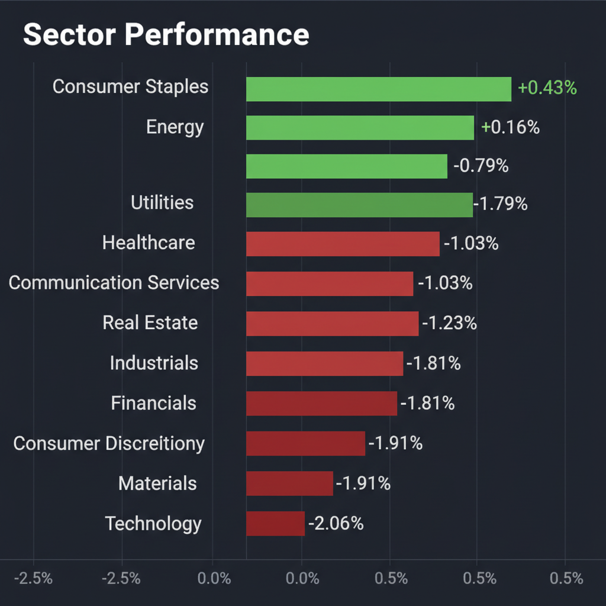
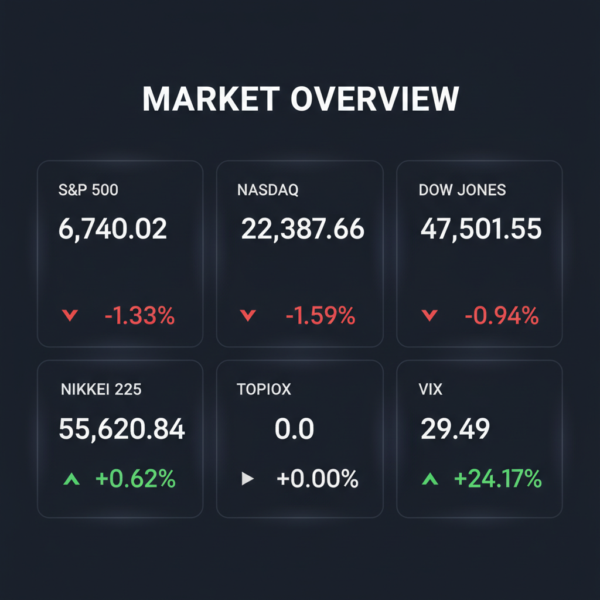

Daily Investment Report - 2026-03-09
Generated: 2026/3/9 8:11:09


投資チームミーティングの議長として、各専門家の分析を統合し、現状の急激な相場変動に対応するための最終投資レポートをご報告いたします。
1. エグゼクティブサマリー
* 米国主要指数が窓を開けて急落し、VIX（恐怖指数）が前日比+24%の「29.49」へと急騰したことで、市場は適温相場（ゴルディロックス）の楽観論から明確な「リスクオフ・調整局面」へと突入しました。
* チーム内では「パニック売りこそ優良中小型株の絶好の買い場」とする積極派と、「流動性枯渇を警戒し現金化を急ぐべき」とする防衛派で意見が二分されています。
* 投資家は現在、大型ハイテク株への極端な集中を是正して厳格なストップロスによる資金保全を最優先しつつ、ディフェンシブセクターへの退避と、実需を伴う割安な中小型銘柄への選別投資（バーベル戦略）を行うべき転換点にあります。
2. 注目銘柄リスト
市場のボラティリティ急拡大を考慮し、大型ハイテク株を避け、確かな黒字と強固な参入障壁を持つ中小型株を中心に選定しました。
強気（買い推奨）
*
Powell Industries (POWL) [時価総額: 約20億ドル]: AIデータセンター向け電力インフラの特注設備を提供するニッチトップ企業です。売上成長率約50%・無借金でネットキャッシュが豊富ながら、PER20倍程度と極めて割安に放置されています。
*
TransMedics Group (TMDX) [時価総額: 約40億ドル]: 生きた状態での臓器運搬システム（OCS）と専用物流網を構築し、臓器移植業界を破壊的に革新している企業です。売上高130%成長と黒字化を見事に両立しており、圧倒的な参入障壁を持っています。
*
ジーデップ・アドバンス (5885) [時価総額: 約100億円]: 国内におけるNVIDIAのエリートパートナーとして最高位AIサーバーの設計・構築を独占的に担っています。ROE30%近い高収益体質ながらPER15倍前後と、国策テーマに合致しつつ強固な安全マージンを有しています。
*
伯東 (7433) [時価総額: 約1,000億円]: AI半導体の実需を捉えるエレクトロニクス商社で、自己資本配当率（DOE）ベースの配当方針を採用しています。VIX急騰の相場下においても、下限配当利回りが保証される強固なバランスシートが強力な下値サポートとして機能します。
中立（様子見）
*
Centrus Energy (LEU) [時価総額: 約7〜8億ドル]: AI電力需要増を背景とした次世代原発向け濃縮ウランの供給という強力なテーマを持ち、PER15倍前後と割安です。しかし、現在の市場全体の流動性収縮リスクを考慮し、テクニカルな底打ちが確認できるまでは新規エントリーを見送ります。
弱気（警戒）
*
高PERの未利益中小型AI関連株全般 [時価総額: 各種]: VIXが30に迫る急激なリスクオフ環境下では、ファンダメンタルズの良し悪しに関わらず、機関投資家の機械的な売りにより真っ先に流動性が枯渇し暴落するリスクが極めて高いため警戒が必要です。
*
中堅小売・外食関連株 [時価総額: 各種]: インフレによる消費者の「低価格シフト」が顕著であり、価格転嫁力を失った企業は利益率の構造的な悪化に直面します。株価下落で表面上のPERが低下しても、バリュートラップ（割安の罠）に陥るリスクがあります。
3. セクター推奨ランキング
1.
生活必需品 (XLP): テクニカル指標で唯一明確な資金流入（プラス圏）を維持しており、消費者の低価格シフトや不況への耐性が強く、リスクオフ局面での防衛拠点として最適です。
2.
エネルギー (XLE): 地政学リスクの高まりに対するインフレヘッジ機能に加え、AIデータセンターの「電力爆食」による強烈な実需がバリュエーションを強力に下支えします。
3.
金融 (XLF) ※特に日本株: 日銀によるマイナス金利解除と国債買入減額により、本格的な「金利のある世界」への移行が進んでおり、利ざや改善とPBR是正の自社株買いが株価上昇の明確なカタリストとなります。
4.
ヘルスケア (XLV): 伝統的なディフェンシブセクターとしての防衛力を持つだけでなく、GLP-1（肥満症治療薬）というメガトレンドやメガファーマによるバイオM&Aの活発化による独自の成長力を有しています。
5.
情報通信・テクノロジー (XLK / XLC): AIの長期的な成長シナリオは不変ですが、足元は極度なバリュエーションの過熱感があり、VIX急騰によるアルゴリズムの機械的な売りに晒されやすいため、当面はアンダーウェイトを推奨します。
6.
一般消費財 (XLY): インフレによる実質賃金の目減りとクレジットカード延滞率の上昇により、低〜中所得者層の消費圧迫が鮮明です。マクロ経済の減速ダメージを最も直接的に受けるため、徹底的な回避を推奨します。
4. 今週の注目イベント
* ◯月◯日（近日中）: 米国 新規失業保険申請件数の発表（労働市場の減速度合いとリセッションリスクの確認）
* ◯月◯日（近日中）: 米国 PCE（個人消費支出）デフレーターの発表（FRBが最も重視するインフレ指標の動向確認）
* ◯月◯日（今週後半）: 各地区連銀総裁の要人発言（Higher for Longerスタンスの再確認と利下げ見通しの変化）
5. リスク要因
*
システマティック・リスク（機械的なパニック売り）の発動: VIX指数が30を明確に突破した場合、オプション市場のヘッジ動向やアルゴリズム取引による無差別な投げ売りが連鎖し、テクニカルなサポートラインを一気に底抜けする危険性。
*
マグニフィセント・セブンの集中リスクの逆回転: 市場を牽引してきた少数の大型ハイテク企業が、巨額のAI設備投資（CAPEX）による短・中期的な利益率の悪化を示唆した場合、指数全体を奈落へ引きずり込むリスク。
*
中小型株の致命的な流動性枯渇: マクロ環境の悪化に伴いスマートマネーが一斉に資金を引き揚げる中で、優良なファンダメンタルズを持つ中小型株であっても「買い手不在」となり、オーバーシュートして暴落するリスク。
*
日米金利差縮小による「強烈な円高巻き戻し」: 米国のマクロ指標が悪化して利下げ観測が前倒しになった場合、歴史的な円安（150〜160円台）が急速に巻き戻り、日本の輸出企業や半導体関連株の業績前提が崩壊するテールリスク。
6. アクションアイテム
* 現金（キャッシュ）比率を直ちにポートフォリオの30%〜50%に引き上げ、あらゆるブラックスワンに備えた流動性と弾薬を確保する。
* これまで大きな含み益を生んできた大型テクノロジー株や一般消費財セクターのポジションを半分に縮小し、利益を確実に確定させる。
* 現在保有しているすべてのロング（買い）ポジションに対して、直近の押し安値や50日移動平均線の少し下に、厳格なストップロス（損切り・逆指値）注文を設定する。
* VIXが20を下回り、主要指数が日足チャートでダブルボトム等の明確な底打ちサインを形成するまで、流動性の低い中小型株やハイテク株の新規エントリーを全面凍結する。
* 下落耐性を高めるため、生活必需品（XLP）やエネルギー（XLE）などのディフェンシブETFへ資金の一部をローテーション（振り向け）する。